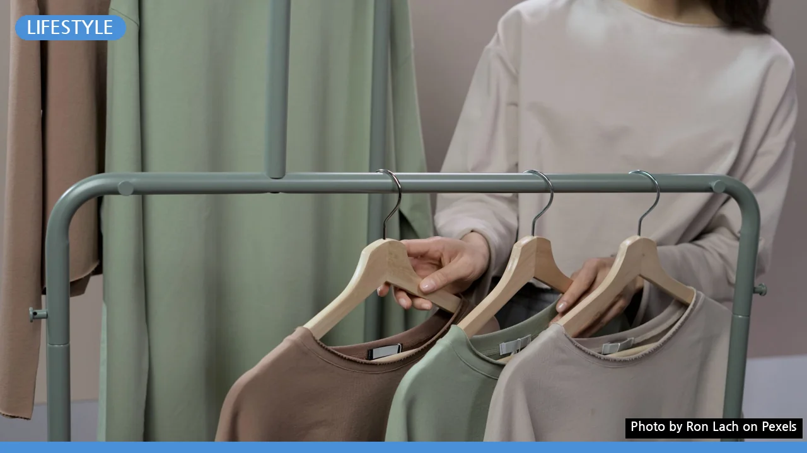

미니멀 옷장, 실패 없이 시작하는 비결? 핵심 성분과 구매 체크리스트
사진: Ron Lach / Pexels (무료 이미지, 출처 표기)
미니멀 옷장, 왜 시작할까요?
옷장 가득한 옷 중 입을 옷이 없다는 생각, 많은 분이 공감하실 겁니다. 미니멀 옷장은 단순히 옷의 수를 줄이는 것을 넘어, 나에게 꼭 필요한 옷으로만 채워 시간과 에너지를 절약하고, 현명한 소비 습관을 기르는 라이프스타일입니다. 오래 입을 수 있는 좋은 옷을 선별하고 관리하는 과정에서 환경 보호에도 동참할 수 있습니다.
그러나 무작정 시작했다가 후회하는 경우도 많습니다. 유행에 휩쓸려 충동구매하거나, 소재를 고려하지 않아 쉽게 망가지기도 합니다. 이 글은 2026년 11월 기준으로 실패 없는 미니멀 옷장 만들기를 위해 옷의 '성분' 즉, 소재별 특징과 현명한 구매 및 관리 '주의사항'을 구체적으로 알려드립니다.
미니멀 옷장의 핵심: 소재별 특성과 관리법
미니멀 옷장의 성공은 옷의 '성분'에 대한 이해에서 시작됩니다. 옷을 만들 때 쓰이는 섬유 소재는 각각 고유한 특성을 지니며, 어떤 소재를 선택하느냐에 따라 착용감, 내구성, 관리 난이도가 크게 달라집니다. 주요 섬유 소재들의 특징과 일반적인 관리법은 다음과 같습니다.
위 표는 일반적인 섬유의 특성입니다. 실제 제품은 혼방 여부, 가공 방식에 따라 다를 수 있으니, 구매 전 반드시 제품의 케어 라벨(Care Label)을 확인하는 것이 중요합니다.
미니멀 옷장 필수 아이템, 어떤 성분으로 고를까?
미니멀 옷장을 구성할 때는 활용도가 높고 여러 계절에 걸쳐 입을 수 있는 기본 아이템부터 시작하는 것이 좋습니다. 아이템별로 추천하는 소재는 다음과 같습니다.
- 기본 티셔츠: 면 100% 또는 면-모달(Modal, 너도밤나무 추출물로 만든 친환경 재생 섬유) 혼방이 좋습니다. 면은 통기성과 흡습성이 좋아 편안하고, 모달은 부드러운 촉감과 은은한 광택을 더해줍니다. 오래 입을 수 있도록 톡톡한 두께감을 선택하세요.
- 셔츠/블라우스: 면, 린넨, 또는 면-폴리에스터 혼방이 적합합니다. 린넨은 여름에 시원하고 멋스럽고, 면은 사계절 활용도가 높습니다. 구김이 싫다면 폴리에스터가 혼방된 소재를 고려할 수 있습니다.
- 바지(슬랙스/데님): 울 혼방, 면-스판덱스 혼방, 데님(면)이 일반적입니다. 슬랙스는 구김이 적고 형태가 잘 유지되는 울 혼방이 좋고, 데님은 튼튼한 면 소재가 기본입니다. 활동성을 위해 스판덱스(Spandex, 고무줄처럼 신축성이 뛰어난 섬유)가 소량 함유된 것을 선택하는 것도 좋은 방법입니다.
- 니트/가디건: 울, 캐시미어, 또는 아크릴(Acrylic, 양모를 모방하여 만든 합성 섬유) 혼방이 주로 쓰입니다. 보온성과 부드러움을 원한다면 울이나 캐시미어, 실용성과 관리가 용이한 것을 찾는다면 아크릴 혼방을 선택할 수 있습니다. 단, 아크릴 100%는 보푸라기가 잘 생길 수 있으니 주의하세요.
- 아우터(코트/자켓): 울, 면, 폴리에스터 등이 있습니다. 코트는 따뜻하고 고급스러운 울 소재가 좋고, 자켓은 계절에 따라 면이나 울 혼방이 적합합니다. 생활 방수 기능이 필요한 기능성 아우터는 폴리에스터나 나일론(Nylon, 강하고 내구성이 좋은 합성 섬유) 소재를 확인하세요.
실패하지 않는 미니멀 옷장 구매 체크리스트
미니멀 옷장을 완성하기 위해선 신중한 구매가 필수입니다. 다음 체크리스트를 활용하여 현명하게 옷을 선택하세요.
- 품질과 내구성: 소재의 좋고 나쁨을 떠나, 봉제 상태가 견고한지, 단추나 지퍼 같은 부자재가 튼튼한지 확인하세요. 몇 번 입고 버릴 옷이 아닌, 오래 입을 수 있는 기본에 충실한 제품을 고르는 것이 중요합니다.
- 활용도와 범용성: 단 한 벌로 다양한 코디가 가능한지, 여러 아이템과 쉽게 매치되는 색상과 디자인인지 고려합니다. 특정 유행을 타는 옷보다는 시대를 초월하는 클래식한 디자인이 좋습니다.
- 관리의 용이성: 세탁 및 관리가 너무 까다롭지 않은지 확인하세요. 모든 옷이 드라이클리닝만 가능하다면 유지 비용이 부담될 수 있습니다. 자신의 라이프스타일에 맞는 관리 난이도의 옷을 선택하는 것이 현명합니다.
- 지속가능성과 윤리적 생산: 가능하다면 친환경 소재(오가닉 코튼, 리사이클 폴리에스터 등)나 공정 무역(Fair Trade, 개발도상국 생산자에게 정당한 대가를 지급하는 무역)으로 생산된 제품을 선택하여 지속가능한 소비에 동참하는 것도 좋습니다.
- 내 몸에 맞는 핏: 아무리 좋은 옷이라도 내 몸에 편안하게 잘 맞는 것이 중요합니다. 입었을 때 불편하거나 어색한 핏이라면 손이 잘 가지 않아 결국 옷장 속 애물단지가 될 수 있습니다.
미니멀 옷장 관리를 위한 현명한 습관
어렵게 고른 미니멀 옷장 아이템을 오랫동안 새것처럼 유지하려면 올바른 관리 습관이 중요합니다.
- 정리 정돈: 옷을 너무 꽉 채워 보관하면 구김이 가거나 변형될 수 있습니다. 옷 사이에 적절한 공간을 두어 통풍이 잘 되도록 하고, 니트류는 늘어짐을 방지하기 위해 접어서 보관하는 것이 좋습니다.
- 올바른 세탁: 옷 안쪽의 케어 라벨에 표기된 세탁 방법을 반드시 따르세요. 소재별로 세탁법이 다르므로, 이전에 언급된 소재별 관리 팁을 참고하여 적절한 온도와 세제를 사용합니다. 얼룩은 바로 제거하는 것이 옷을 오래 입는 비결입니다.
- 적절한 수선: 단추가 떨어지거나 실밥이 풀리는 등 사소한 손상은 빠르게 수선합니다. 작은 수선으로 옷의 수명을 크게 늘릴 수 있습니다. 전문 수선 업체에 맡기거나 간단한 수선은 직접 해보세요.
- 계절별 보관: 다음 계절에 입을 옷은 깨끗하게 세탁 후 충분히 건조하여 습기와 해충으로부터 안전하게 보관합니다. 제습제와 방충제를 함께 넣어두면 더욱 효과적입니다.
미니멀 옷장은 단순한 패션 트렌드를 넘어, 삶의 질을 높이는 하나의 과정입니다. 현명한 선택과 꾸준한 관리를 통해 나만의 가치 있는 옷장을 만들어가시길 바랍니다. 정확한 사항은 제품의 케어 라벨이나 전문가의 조언을 다시 확인하시길 권장합니다.
🔗 이 글도 함께 보면 좋아요: 미니멀 옷장 시작은 이것부터! 5단계 체크리스트로 실패 없이
관련 추천 상품
이 포스팅은 쿠팡 파트너스 활동의 일환으로, 이에 따른 일정액의 수수료를 제공받습니다.